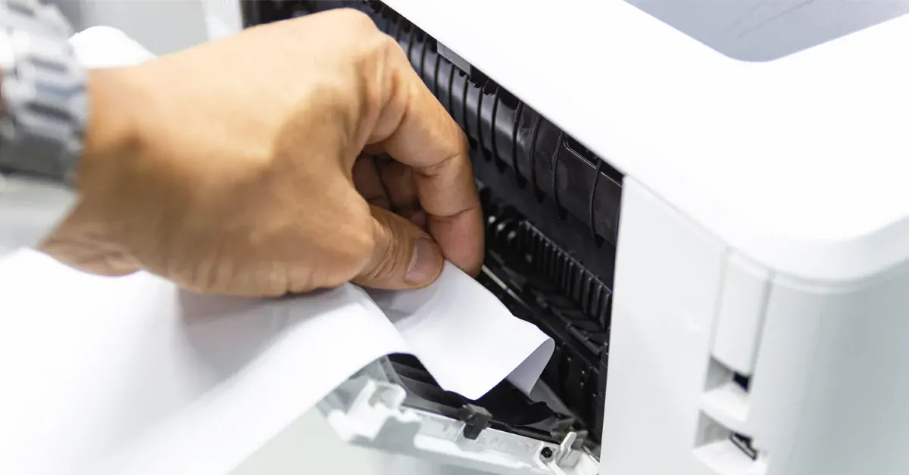
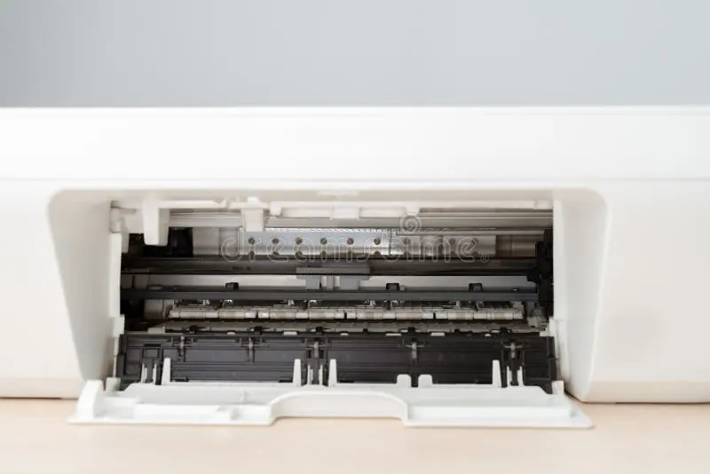

Printers
How to Fix a Paper Jam Without Damaging Your Printer
Learn how to remove jammed paper safely, prevent repeat jams and recognise when a printer needs professional attention.
Introduction: Remove Jammed Paper Carefully
Paper jams can be frustrating and leave you with ripped pieces of paper in your printer. It is best to cancel the print job and locate where the paper is jammed. Follow the instructions for your specific printer model. To avoid causing damage to the rollers, sensors and other parts of the printer do not pull paper the wrong way, force open the cover or use sharp tools.
Printers will vary with some having rear, front and top access whilst others have separate paper paths for duplexing and document feeding. Check the printer screen or manual for guidance on where the paper is jammed. Below are some general tips, however following your manufacturers instructions is best.

1. Cancel Print Job and Turn Off Printer
Cancel the print job on your computer or printer. If your printer is currently feeding paper allow it to finish. Press the power button to switch the device off. If your manual says to unplug the printer do so. If you have a laser printer there may be hot parts inside such as the fuser so allow the printer to cool down for the amount of time advised by the manufacturer.
Do not tug the power cable whilst the printer is moving or during a maintenance cycle unless there is an immediate safety issue. If you can smell burning, see smoke or notice electrical issues stop using the printer and get it serviced.
2. Locate Jammed Paper
Check the printer screen or manual for any indication of where the paper is jammed. This could be the paper tray, rear door, duplexer, output tray or document feeder. Open any covers indicated in your manual. Remove any loose paper from the paper tray.
Using good lighting look through the paper path for any obvious paper jams. Do not try to reach into any areas that state they are dangerous or sealed for servicing. If the paper is stuck deep within the printer a technician should remove it.
3. Gently Pull Paper in the Correct Direction
Try to grasp the paper with both hands and gently pull it out. Try to keep the paper as straight as possible. Follow the instructions on your printer to make sure you are pulling it in the correct direction. Avoid jerking motions and do not pull against any resistance. If the paper tears stop pulling and check for any remaining paper.
Avoid using scissors, knives, tweezers or screwdrivers inside the paper path. These can cause scratches to the rollers, damage the sensors or cause an electrical issue. If there is a small piece of paper stuck that you cannot safely reach close up the covers and get it serviced.
4. Check Paper Tray
After removing the paper jam check the paper stack. Remove any folded, damp, curled or damaged pages. Ensure you are not overfilling the paper tray. The paper guides should be tight enough to just touch the edge of the paper but not cause any bending. If they are too loose the paper may feed crookedly. If they are too tight the paper will not feed smoothly.
Make sure you are using the correct paper size and type for your printer. Do not use different sizes or weights unless your manual says it is okay to do so. Store your paper flat in a dry place. If your manual says to fan the paper do so. Too much static, moisture or curled paper can cause paper feed issues.

5. Check Rear Covers/Duplexers
Many printers have a rear cover or removable duplexer to allow you to clear paper from the back of the paper path. Open any covers/duplexers as instructed in your manual. Make sure you are unlocking the correct latch and gently remove the duplexer. Do not force it open.
Check for any paper jams. Ensure there is no obvious obstructions on the rollers or guides. Once you have finished make sure you have fully re-fitted the duplexer or access panel. If it is not fitted correctly you may get an error or the printer will not print.
6. Check Automatic Document Feeder
If you had a paper jam whilst scanning, copying or faxing a multi-page document it may be the automatic document feeder causing the issue. Remove the pages from the original. Open the cover as instructed and gently remove any jammed paper. Check for any staples, paperclips, folded corners or stuck pages.
Fan and organise your documents. Place them in the feeder according to the indicators. Do not use photographs, thick cards or fragile originals in a feeder unless it is suitable. Use the flatbed scanner for delicate or odd items.
7. Turn On Printer and Print Test Page
Once you have removed all the paper you can from the printer and securely closed all covers plug the printer back in. Allow the printer to start up. Check that there is no longer a paper jam message. Print a simple test page.
If the printer still states there is a paper jam even though you cannot see any paper do not assume the sensor is faulty. There may be a small piece of paper still in the paper path or the covers/duplexer may not be fitted. Check the paper jams indicated in your manual. If it still shows an error contact support.
Common Causes of Paper Jams
If you are experiencing repeated paper jams there is likely an issue with your paper. Common causes are incorrect paper, damp or curled paper, overfilled paper trays, incorrect paper guides, worn paper feed rollers, dirt and damaged paper. If you are getting the same paper jam every time in the same place it could be due to a worn roller, sensor or mechanical issue.
Take note of where the paper is jamming and what paper tray and type you are using. If it is only happening with a certain type of paper check if this is a supported paper. If it is happening with standard recommended paper in different print jobs get it checked.
How to Avoid Future Paper Jams
Keep your paper in its original packaging until you are ready to use it. Keep it away from moisture and heat. Only use the correct size and weight of paper. Make sure your paper guides are correctly positioned. Do not overfill the paper tray. Remove any damaged paper. If you are using mixed paper types ensure your printer supports this. Place your printer on a stable surface and follow any maintenance requirements.
Use the correct tray for envelopes, labels or heavy media. Ensure your print driver settings are correct for the paper you are using. Pulling out the paper tray whilst it is feeding, forcing thick paper stacks and using curled paper can cause more paper jams. Often simply ensuring you are loading your paper correctly will help.
When to Contact a Technician
If you cannot access the paper, are hearing grinding/clicking noises, seeing damaged rollers, are getting the same paper jam with correct loading or the printer keeps showing an error relating to the paper path contact a technician. Do not try to open up the fuser, power supply or sealed parts. Laser printers can have hot parts.
When contacting a technician let them know what model your printer is, what error you are getting, where the paper is jammed, what paper you are using and if the paper was torn. If possible take a picture of the error message without opening up any unsafe parts. This can help identify if it is likely to be a feed roller, sensor, duplexer or other part.
Conclusion
To resolve a paper jam without causing damage cancel the print job and follow the instructions for your specific model. Gently pull the paper in the correct direction. Check any accessible paper trays and covers for any paper jams. Never force open any covers or use sharp tools. Check the quality and loading of your paper. Print a small test page. If you continue to have paper jams or the paper is stuck in an area you cannot safely reach it would make sense to get it repaired by a professional..
Need a hand with your printer or laptop?
Printerworld sells printers, laptops and genuine supplies, and repairs and services both. Bring in your model number and we will help you get it right.